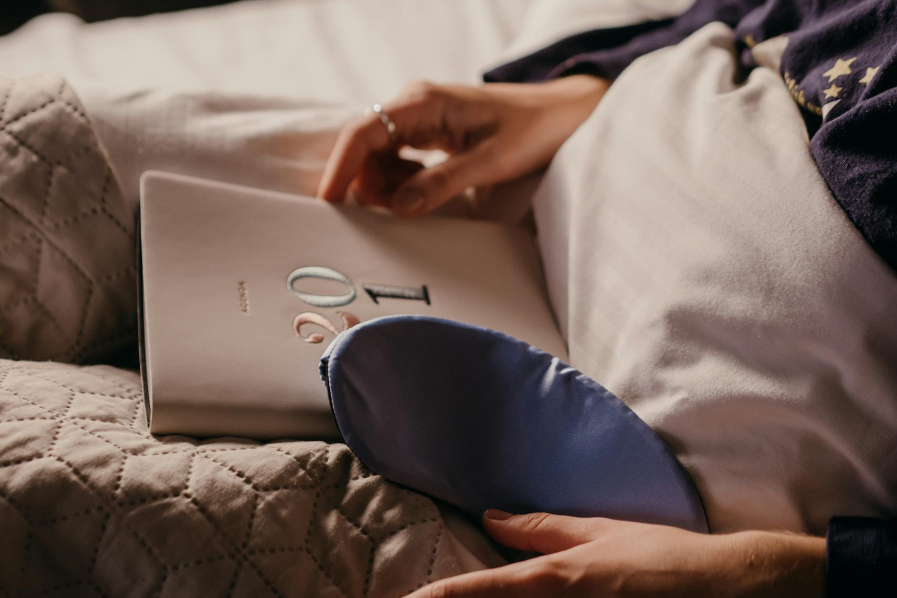

How to Use Light for Perfect Sleep

Quick answerPractical steps and key takeaways are summarized below.
Key takeaways
- Practical steps and key takeaways are summarized below.
- Prioritize evidence-informed habits over one-off hacks.
- Track what feels sustainable and adjust gradually.
More in sleep
 sleep
sleepHow to Make Your Bedroom a Sleep Haven
Discover how to transform your bedroom into the ultimate sleep sanctuary. Learn simple, actionable tips to optimize your
Read article → sleep
sleepStruggling to Sleep? Try This Reset
Discover non-supplement ways to fall asleep faster. Learn practical tips and habits to improve your sleep quality.
Read article →Related posts
sleepHow to Make Your Bedroom a Sleep Haven
Discover how to transform your bedroom into the ultimate sleep sanctuary. Learn simple, actionable tips to optimize your
Read article →sleepStruggling to Sleep? Try This Reset
Discover non-supplement ways to fall asleep faster. Learn practical tips and habits to improve your sleep quality.
Read article →
sleepWhat's the Best Way to Wind Down Before Bed?
Discover simple, effective bedtime routines and wind-down habits to improve your sleep quality and feel more rested. Lea
Read article →